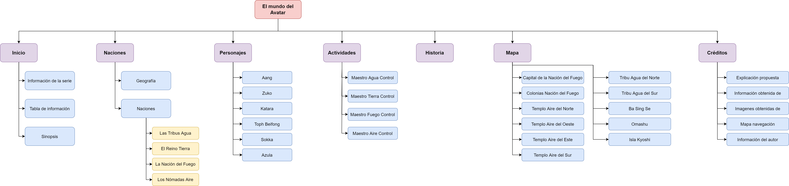

Explicación propuesta:
En esta página se muestra de forma interactiva información de la serie Avatar, La leyenda de Aang, en la página de inicio se presenta información básica de la serie y una sinopsis; en la página de Naciones, se presenta información de cada una de las cuatro naciones; en la página personajes se resume de forma breve la historia de los personajes principales; en la página historia, se menciona muy resumidamente la historia de la serie.
La última sección es la denominada mapa, la cual presenta un mapa interactivo con los lugares más importantes de la serie, este mapa está diseñado para funcionar en todo tipo de dispositivo, gracias a las funcionalidades responsive de Phaser 3. Para utilizar el mapa se debe hacer clic o seleccionar cada uno de los botones flotantes en el mapa, al hacer esto se despliega un menú lateral con información del lugar. Para finalizar, la última página del sitio web es créditos, donde se presenta la explicación de la propuesta, los créditos de las distintas imagenes y fuentes de información, y el mapa de navegación.
Información obtenida de:
- https://avatar.fandom.com/es/wiki/Historia_en_el_Mundo_Avatar
- https://avatar.fandom.com/es/wiki/Avatar_Wiki
- https://en.wikipedia.org/wiki/Avatar:_The_Last_Airbender
Imagenes obtenidas de:
- http://i.imgur.com/YCfWJGx.jpg
- https://i.pinimg.com/originals/fb/b2/6b/fbb26b146d5d46b98186dde13321d815.jpg
- https://static.wikia.nocookie.net/avatar/images/1/13/Restored_Eastern_Air_Temple.png/revision/latest?cb=20131102115726
- https://static.wikia.nocookie.net/nickelodeon/images/3/3c/Avatar-_The_Last_Airbender_characters.jpg/revision/latest?cb=20170205223742
- https://image.cdn0.buscalibre.com/54b0011f980774bd028b4567.__RS360x360__.jpg
- https://m.media-amazon.com/images/I/8109cMMF7LS._AC_SY450_.jpg
- https://www.cultture.com/pics/2020/08/avatar-el-ultimo-maestro-aire-trivialidades-que-no-sabias-de-las-tribus-del-agua-4.jpg
- https://static.wikia.nocookie.net/avatar/images/6/64/Templo_Aire_del_Sur_restaurado.png/revision/latest?cb=20200322043248&path-prefix=es
- https://avatar.fandom.com/es/wiki/Avatar_Wiki
{kind=link}
{kind=link}
{kind=link}
{kind=link}
{kind=link}
{kind=link}
{kind=link}
{kind=link}
Mapa de navegación:
Información del autor:
Juan Sebastián Rodríguez Castellanos
Ingeniería de sistemas y computación